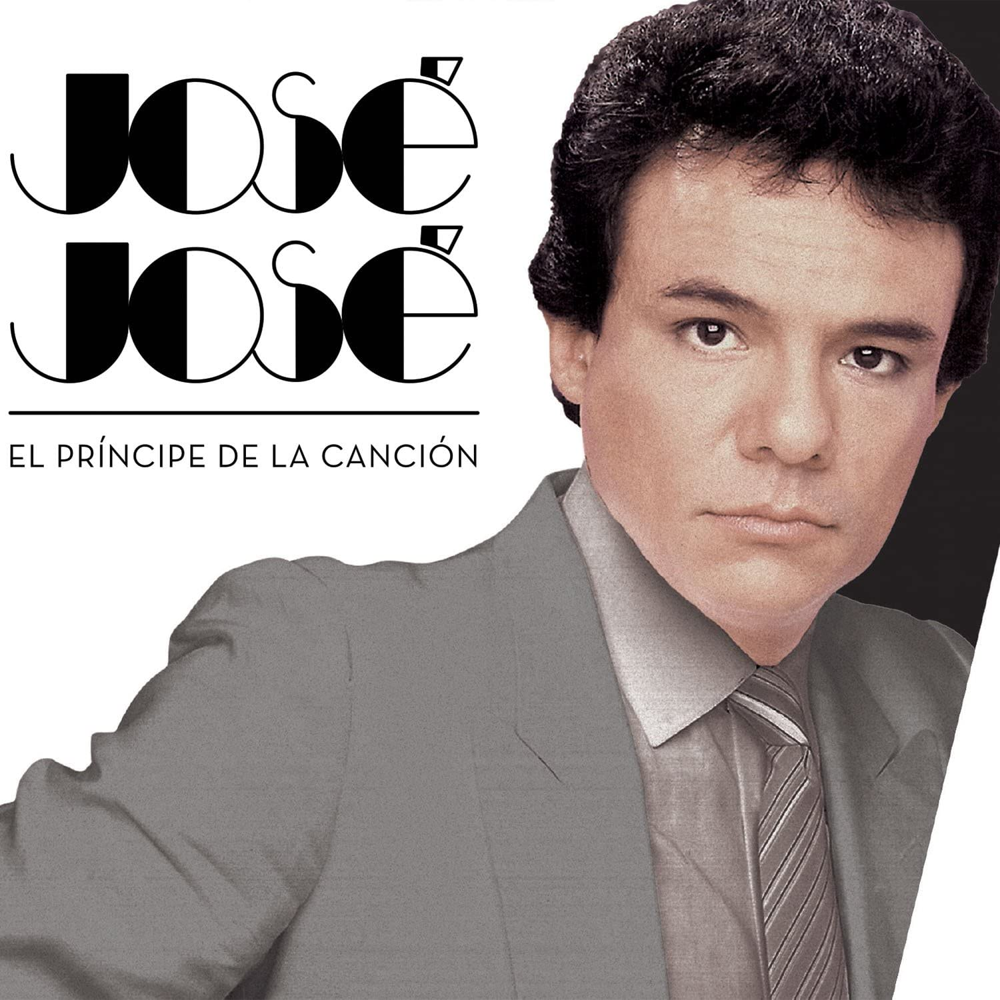
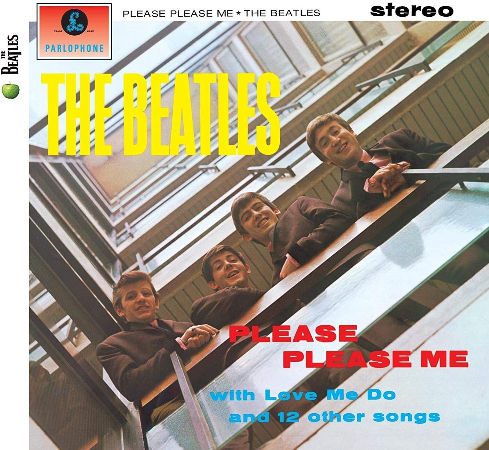
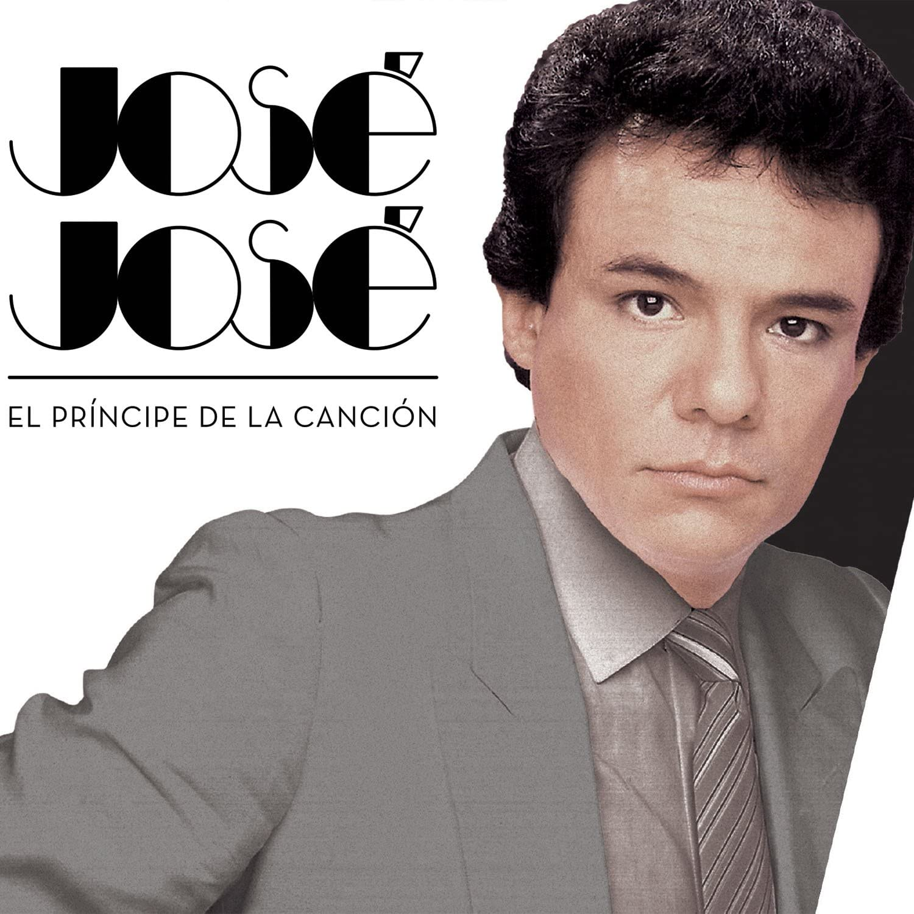
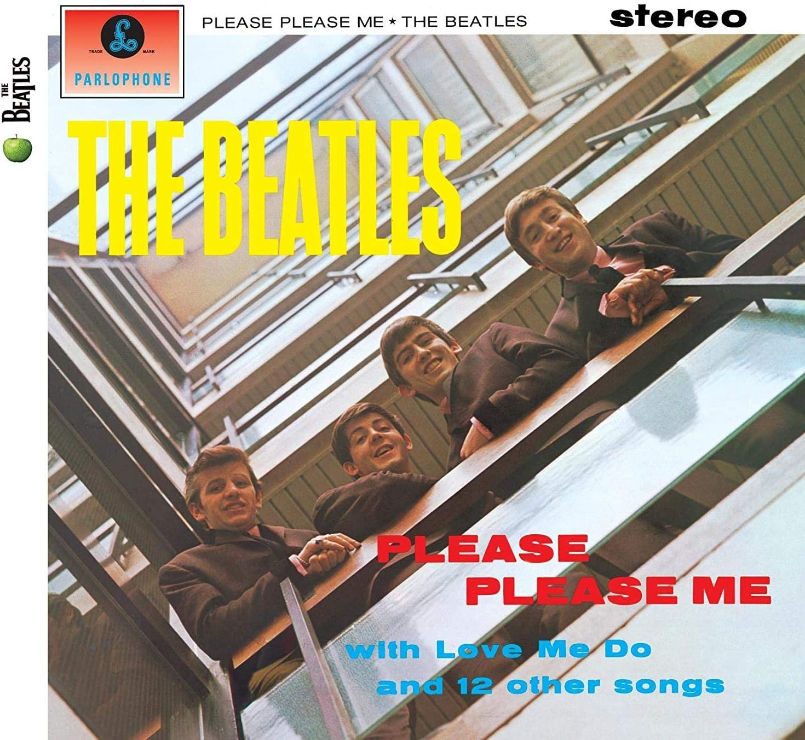

Como parte de un proyecto escolar, me di a la tarea de compartir un poco acerca de mí. Me parece interesante tomarme un tiempo para decir quién soy.
Mi nombre es Alfredo Bautista Ríos, soy el hijo mayor de entre tres hermanos. Nací y crecí en el municipio de Coacalco, Estado de México. Cursando desde Kinder a secundaria no muy lejos de casa, fue en Ecatepec que cursé en vocacional número 3 desarrollándome como técnico en manufactura asistida por computadora, un área que me pareció interesante... pero no demasiado. En la elección de carrera busqué dirigir mis intereses y aptitudes, y me decidí por estudiar ingeniería en sistemas computacionales en ESCOM. Desde muy pequeño, me he dedicado a conocer y explorar las capacidades de la tecnología que están a mi alcance. Con mucha fascinación he observado los avances que ésta tiene y me preparo para aportar y diseñar mis propios sistemas, buscando soluciones a nuevos problemas.
Fuera del ámbito académico, me considero una persona de carácter serio pero
relajado, confiado, honesto, educado, creativo, espontáneo, con exceso de paciencia y
pensamiento ágil. Buscando siempre disfrutar cada momento insignificante de la vida.
Disfruto mucho de conocer personas. He hecho amistades realmente buenas. Gusto mucho
aprender de las personas que me rodean, escuchar lo que piensan y lo que saben acerca
de los temas que más les apasionan.
Mis intereses no son los mismos; cambian constantemente con las vivencias y experiencias que han impactado mi vida. Estos son algunos de los intereses que considero han perdurado más tiempo.
 



"Vine a Comala porque me dijeron que acá vivía mi padre, un tal Pedro Páramo. Mi madre me lo dijo. Y yo le prometí que vendría a verlo en cuanto ella muriera. Le apreté sus manos en señal de que lo haría; pues ella estaba por morirse y yo en un plan de prometerlo todo. 'No dejes de ir a visitarlo -me recomendó-. Se llama de otro modo y de éste no se acordará. Necesitarás hablarle fuerte al oído'. Por lo tanto, cumpliría yo la promesa que le hice, a pesar de que hubiera sido mejor que nunca la hubiera hecho. Ni para ella ni para mí."
"En un lugar de la Mancha, de cuyo nombre no quiero acordarme, no ha mucho tiempo que vivía un hidalgo de los de lanza en astillero, adarga antigua, rocín flaco y galgo corredor."
01000111 01101001 01101111 01110010 01100111 01101001 01101111 00100000 01100010 01111001 00100000 01001101 01101111 01110010 01101111 01100100 01100101 01110010
01001110 01101111 01110100 00100000 01101001 01101110 00100000 01110100 01101000 01100101 00100000 01110011 01101001 01101100 01100101 01101110 01100011 01100101 00100000 01101111 01100110 00100000 01100100 01101111 01110101 01100010 01110100 00100000 01101111 01110010 00100000 01101111 01100110 00100000 01110100 01101000 01100101 00100000 01110111 01101111 01110010 01101100 01100100 00100000 01101001 01101110 00100000 01101101 01111001 00100000 01100101 01101110 01110100 01101001 01110010 01100101 00100000 01101100 01101001 01100110 01100101
00100000 01001001 00100000 01100100 01100101 01100011 01101001 01100100 01100101 01100100 00100000 01110100 01101111 01110100 01100001 01101100 01101100 01111001 00100000 01101101 01100001 01101011 01100101 00100000 01110100 01101000 01100101 00100000 01110011 01101111 01110101 01101110 01100100 00100000 01101111 01100110 00100000 01101101 01110101 01110011 01101001 01100011 00101100 00100000 01101111 01110010 00100000 01110011 01101111 01101101 01100101 01110100 01101001 01101101 01100101 01110011 00100000 01101111 01110101 01110100 00101100 00100000 01110100 01101000 01100001 01110100 00100111 01110011 00100000 01110100 01101000 01100101 00100000 01101010 01101111 01100010
01001111 01100110 00100000 01101111 01100110 00100000 01101101 01111001 00100000 01101100 01101001 01100110 01100101 00101100 00100000 01101001 01110100 00100111 01110011 00100000 01101110 01101111 01110100 00100000 01100001 00100000 01101101 01100001 01110010 01100011 01101000